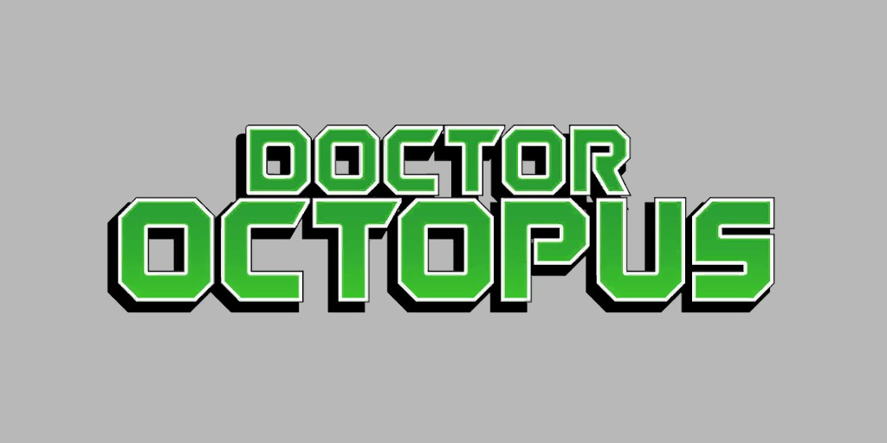
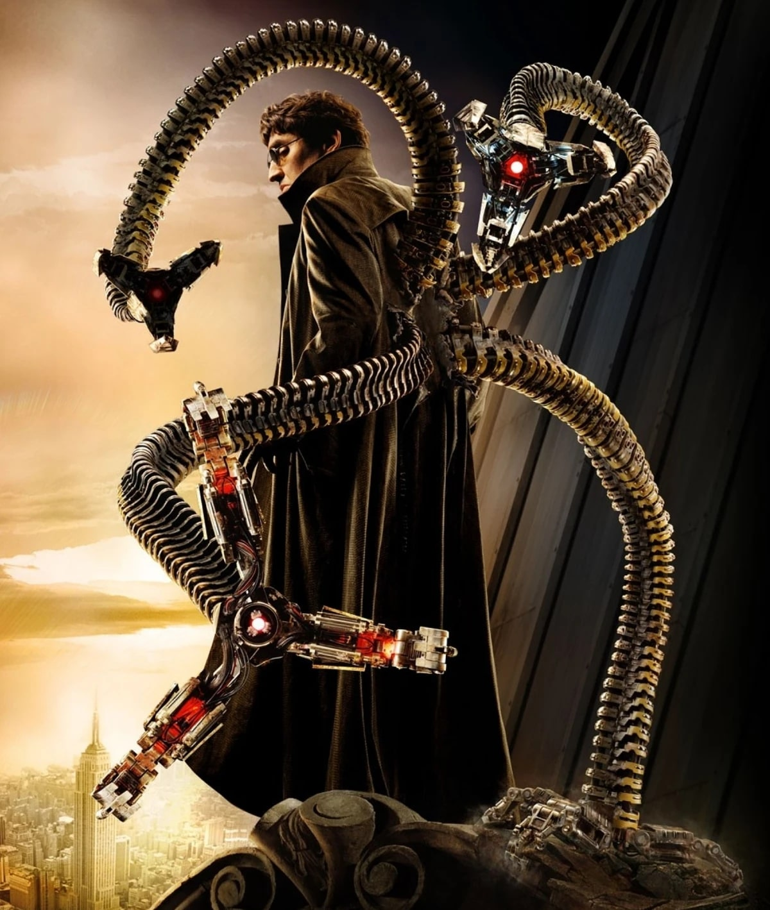
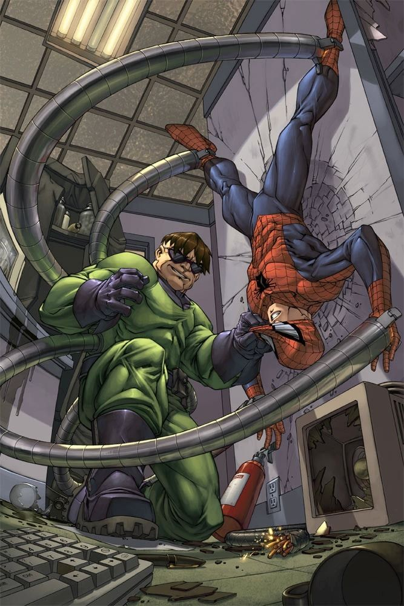
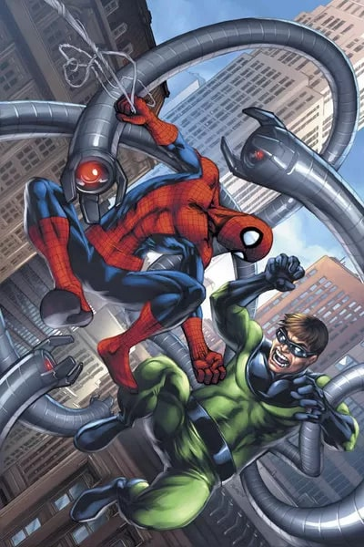
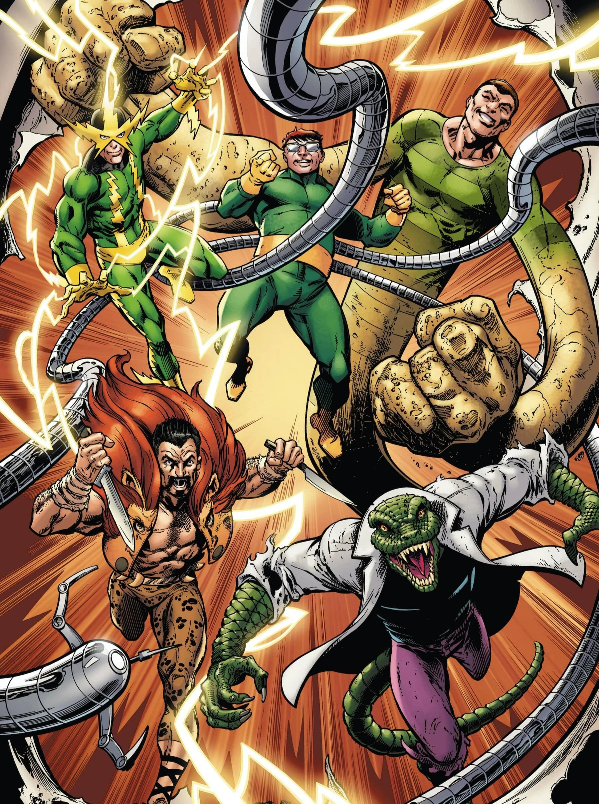

Docteur Octopus (Otto Octavius) (Terre-616)

Origines :
Fils d'une mère étouffante et d'un père brutal, Otto Octavius grandit dans la ville de Schenectady, dans l'État de New-York.
Terrifié par son père, qui le battait, Otto fut un enfant renfermé, timide et craintif.
La mort accidentelle de son père lors d'un incident à l'usine ne fit que renforcer sa détermination à se plonger dans les études d'une manière obsessionnelle et plus particulièrement vers les sciences.
Après des études fructueuses, Otto devient un brillant atomiste.
Au cours d'un projet de recherche, il imaginera un harnais thoracique auquel était fixés quatre tentacules métalliques lui permettant de manipuler de dangereuses substances radioactives à distance.
Au cours d'un accident de laboratoire, il se produisit une explosion de liquides radioactifs et le savant fut irradié.
Le harnais se souda alors à sa peau et fut relié à son système nerveux, lui causant de graves lésions cérébrales, le poussant à devenir un criminel.
Octavius constata alors qu'il pouvait manœuvrer mentalement ses bras artificiels.
Au fil des années, il acquit un contrôle de plus en plus grand sur eux : il est désormais capable de les diriger même s'ils sont séparés du harnais.
Lors de sa première rencontre avec l'Araignée, le Docteur Octopus le surpasse et le jette par la fenêtre.
Suite à cette défaite, Spider-Man envisagea d'arrêter sa carrière héroïque, mais fut convaincu par la Torche Humaine, et prit sa revanche sur le Docteur Octopus.
Après un séjour en prison, il sera de nouveau confronté à Spider-Man, où il le démasqua, mais refusera de croire que son ennemi juré n'était qu'un adolescent.
Le Docteur rassemblera d'autres ennemis du héros pour former les Sinister Six dans l'espoir de vaincre le héros.
Il enlèvera Betty Brant, en sachant que Spider-Man était déjà venu à sa rescousse et qu'il recommencerait sans doute, mais ils seront tous défaits par le Tisseur.
Après une nouvelle évasion de prison et un nouvel affrontement avec Spider-Man, la bataille causera la mort du Capitaine George Stacy, provoquant un premier traumatisme chez Peter.






Capacités :
Otto Octavius est un génie dans le domaine de la physique atomique.
En raison de son exposition aux radiations atomiques, le Docteur a acquis la capacité de contrôler mentalement ses quatre tentacules artificiels faits d'un alliage d'acier et de titane.
Chacun de ces bras est capable de soulever plusieurs tonnes, et leur temps de réaction est amélioré au-delà de la capacité humaine normale.
Avec ces bras, il est capable de se déplacer rapidement sur n'importe quel terrain, y compris des surfaces verticales et au plafond.
Il les maîtrise à un tel point qu'il peut aisément affronter plusieurs ennemis simultanément tout en effectuant une tâche à part entière avec ses bras organiques.

Apparence :
Otto Octavius est un homme d'âge moyen, assez corpulent voire bedonnant.
Il porte souvent des lunettes rondes teintées cachant ses yeux.
Il est souvent représenté avec une coupe au bol, et un visage rond avec des traits durs.
Il porte une combinaison verte moulante, ou un costume de scientifique vert et jaune selon les versions.
Il porte quatre bras métalliques fixés à un harnais métallique autour de son torse.


